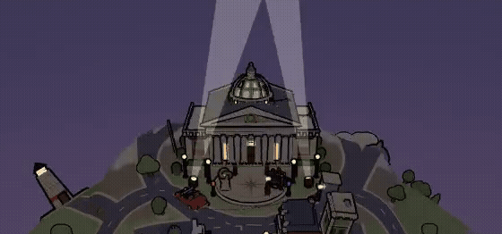
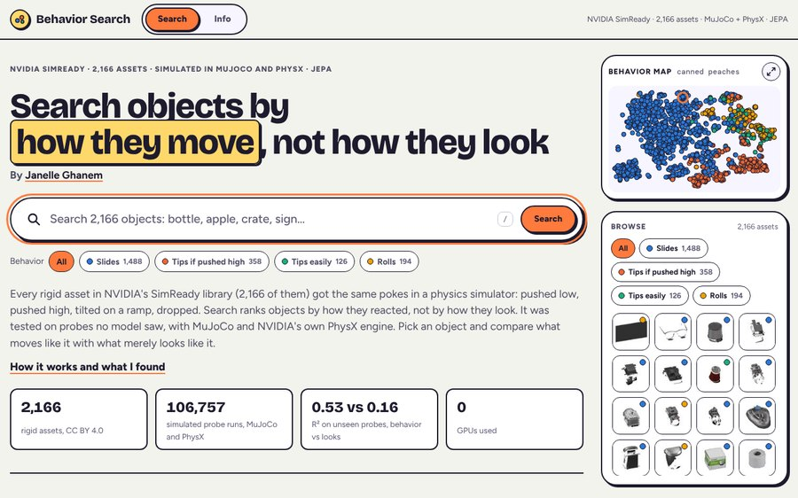
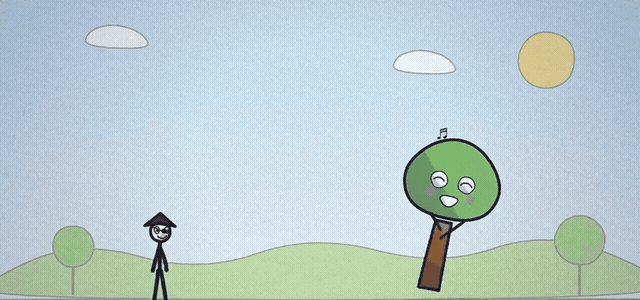
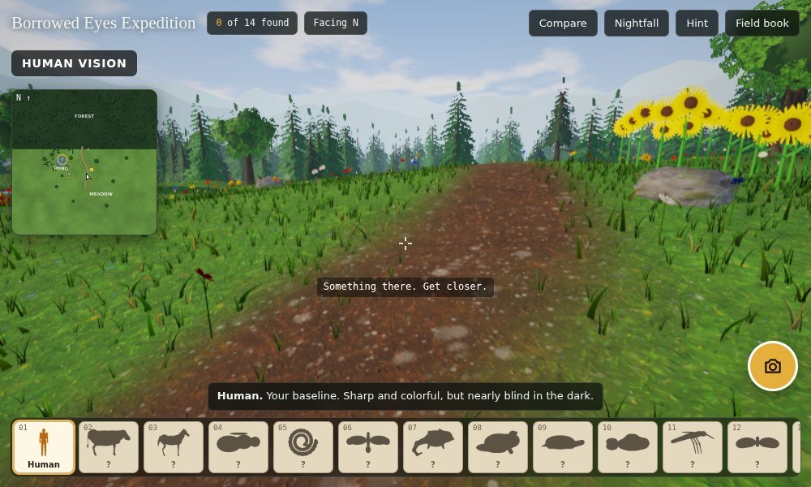
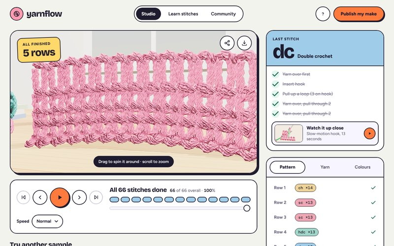
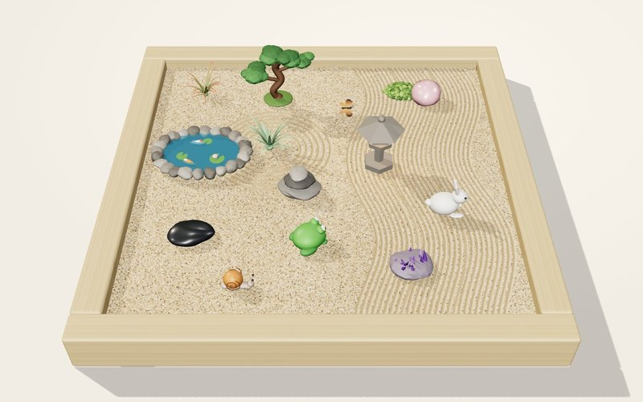
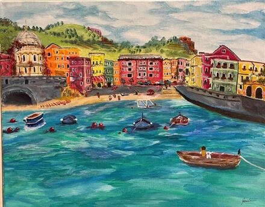

hi, I’m
I lead physics-based AI at MIT Lincoln Laboratory, and I build playful software on the side.
$19M
AI program, from $0
$100M
projected savings
2
U.S. patents
walk my street at ghanemja.github.io







my tiny planet
Behavior Search
Doodle Libs
Borrowed Eyes
YarnFlow
Zen Garden
my paintings